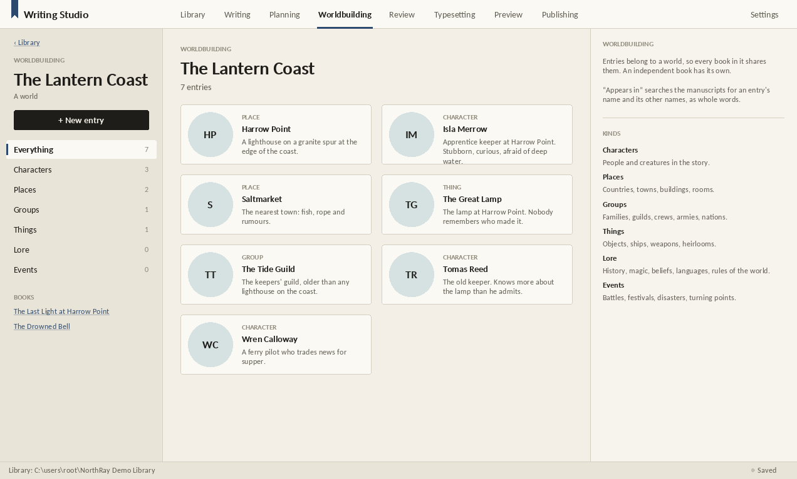

Writing and publishing
NorthRay Writing Studio
A writing and publishing studio for authors: worlds, series and books, through to finished editions.
NorthRay Software · Preview
Screenshots

The author library: worlds, series and books on a bookshelf. 
Planning: every chapter as a card, with status, viewpoint and word targets. 
Worldbuilding: the world's bible of characters, places, groups and lore. 
Review: what changed since a snapshot, word by word. 
Typesetting: the book laid out as printed pages. 
Publishing: a pre-flight check, spine width and print files for each edition.

About
NorthRay Writing Studio is a desktop app for writing and publishing books. It organises your work as worlds, series and books, and each book as parts, chapters and scenes, written in a calm, page-like editor that saves as you type, keeps earlier versions, and takes comments on the text. Pictures live in an artwork library, with crops and print-resolution checks that never touch the originals. Existing books can be imported from EPUB, Word, OpenDocument, HTML, Markdown and plain text, with PDF import as an experiment. Each book has a planning board, and each world keeps a bible of its characters, places and lore, showing where each appears in the books. Books are typeset into finished pages and previewed as an ebook on different devices, then exported as a print-ready PDF (PDF/X-1a) and an EPUB, after a pre-flight check that also gives the spine width for the cover. Everything stays on your PC; no account or subscription is needed.
What's in it
- IncludedAuthor Library: worlds, series, books
- IncludedManuscript editor: parts, chapters, scenes, versions
- IncludedImport: EPUB, Word, OpenDocument, HTML, Markdown, text (PDF experimental)
- IncludedArtwork and illustration control
- IncludedProfessional typesetting
- IncludedPrint and ebook previews
- IncludedEPUB and print-ready PDF export (first version)
- IncludedWorldbuilding: characters, places, lore and where they appear
- IncludedPlanning board: synopses, status, viewpoint, word targets
- IncludedReview: changes, snapshots, name checks, writing goals
- IncludedComments on the text
Features
- Author Library: worlds, series and books, with standalone and independent books
- Manuscript editor: parts, chapters and scenes, semantic paragraph styles, scene breaks, pictures and spell-check
- Saves as you type, keeps earlier versions of every chapter and scene, and a Trash you can restore from
- Artwork library: crop, size and align pictures without changing the originals, with print-resolution checks for your trim size
- Import from EPUB, Word (.docx), OpenDocument (.odt), HTML, Markdown and text; PDF import is experimental
- Reading order and chronological order for every series; drag and drop to organise
- Typesetting: justified, hyphenated pages with running heads and page numbers, shown as spreads, and exported as a PDF
- Worldbuilding: a bible of characters, places, groups, things, lore and events for each world, with relationships and the chapters each appears in
- Planning board: every chapter and scene as a card with its status, synopsis, viewpoint character, who appears in it, and word targets
- Review: compare any chapter with earlier versions or whole-book snapshots, check names against the world's bible, and track daily writing goals
- Comments: notes pinned to words in the text, resolved when they're dealt with, and listed for the whole book in Review
- Ebook preview on a phone, an e-reader and a tablet, with the reader's own text size, font and page colour
- Publishing: paperback, hardback, large-print and ebook editions with their own ISBNs; print-ready PDF/X-1a and EPUB 3 export, a pre-flight checklist, and spine and cover measurements
What's new
Version 0.34.2 · 2026-11-14
- Fixed: clicking OK (or any button) in a question box did nothing when Windows' display scaling was above 100%; only Enter worked. The box was drawn smaller than the places it took clicks. This is what stopped Review › Names › “Change to” from working with the mouse.
- Fixed: “Change to” now changes every use of the name, including ones in curly quotes (“Marren, wait!”), with a possessive (Marren’s), or next to a dash or an ellipsis. Before, those were skipped. “Appears in” counts them too.
Version 0.34.1 · 2026-11-14
- Choosing who a relationship is with (and a parent, partner, brother or sister, or child) now has a search field: type part of a name and the list narrows. Long lists scroll with the mouse wheel or Page Up and Page Down, so every entry can be reached.
- Any long pop-up list in Writing Studio works the same way.
Version 0.34.0 · 2026-11-14
- Right-click a name in Writing: “Add “Maren” to the bible…” (as whichever kind), or “Open “Maren” in the bible” when it's there. A name of several words (“Maren Holt”) is taken whole, or select the words you want.
- New names as you write: Writing's panel lists names in the open chapter that aren't in the bible yet, with “Add to the bible…” and “Not a name”.
- Maps: a place's or realm's page can have a map, any picture you've made. “+ Pin an entry…” and a click on the map puts it there; click a pin to open it, move it or take it off. Places lists your maps.
- Checks (Worldbuilding's sidebar): names spelt like a bible name, facts that disagree (two lines of an entry's details, or its eyes, hair or age against what the text says about them), and entries never named in the text. Anything can be marked as fine.
- Glossary (Worldbuilding's sidebar): every name and other name from A to Z, with how it's said (“How it's said” on each page) and its line or two.
- Magic and powers: a kind of its own, with pages for how it works, its rules, costs and limits, who can use it and what it can't do.
- Spoilers: mark any fact (a detail, a section, the summary, or the whole entry) as revealed in a later book. The page shows it, and a reader's guide leaves it out for readers of earlier books.
- Share the bible: a website (a folder of linked pages, with the glossary, families, relationships, maps and galleries, ready to put online), or a printable bible as a PDF, typeset like a book. Either can be everything, or a reader's guide up to the end of a chosen book, without spoilers from later books or your notes.
Version 0.33.0 · 2026-11-14
- Family trees: a character's page has a Family section with their parents, partners, brothers and sisters, and children (anyone sharing a parent counts as a brother or sister), with “+ Parent”, “+ Partner”, “+ Brother or sister” and “+ Child”: someone already in the bible, or a new character opened with its name ready to type.
- “See the family tree”: the whole family drawn by generation, partners side by side (two lines for a marriage), lines down to their children. Click anyone to open their page. A wide tree shrinks to fit; wider still, Shift and the mouse wheel move across it.
- Characters lists the bible's families (“The Wren family · 7”), each opening its tree. Families are named after the surname most of them share.
- Publisher
- NorthRay Software
- Version
- 0.55.0
- Download
- 10.8 MB
- Requires
- Windows 10 or 11, 64-bit
- Account
- Not needed